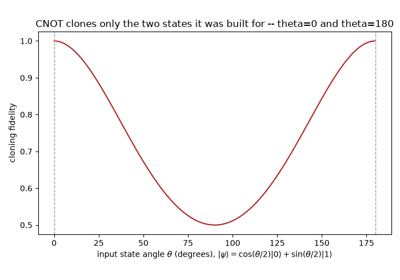
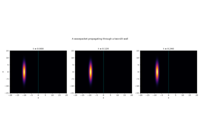
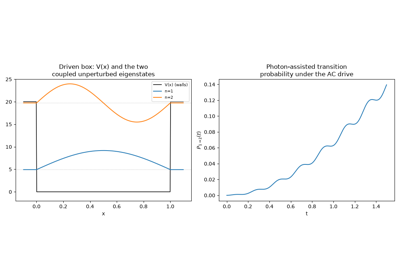
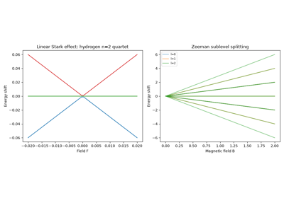
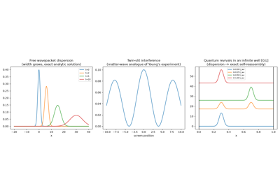

Examples#
Runnable, self-contained scripts demonstrating every chapter of
physicskit.quantum – from arbitrary-potential bound states through
wave-packet dynamics, entanglement, and Floquet driving.
Each script in this gallery is self-contained and can be run directly with
python examples/quantum/<section>/<script>.py. Every script also carries
an RST module docstring as its title/description and uses # %% markers to
split narrative text from code, which is exactly what Sphinx-Gallery renders
into the pages below – the script is the source of truth for what you see,
not a copy of it.
Sections#
potentials – bound and scattering states in model potentials: the matrix Numerov solver for step and finite square wells and the gravitational “quantum bouncer” (checked against exact Airy-function zeros), real-time animated barrier tunneling and well scattering, double-well tunneling (including an animated complex-valued version), 2D quantum boxes, and the Ramsauer-Townsend transmission resonance.
wave_packets – time-dependent dynamics: de Broglie’s traveling matter wave, dispersion (with an animated view of the spreading), twin-slit interference and quantum revivals, Ehrenfest’s theorem in an anharmonic well, and a phase-colored tunneling animation.
harmonic_oscillator – the harmonic oscillator suite of eigenstates and coherent/squeezed states, an animated Fock-state superposition, its Wigner phase-space quasi-probability distribution, and the raw ladder-operator algebra the whole suite is built on.
hydrogen – the hydrogen atom’s orbitals in three dimensions, including an animated two-eigenstate superposition beating at the Bohr frequency.
entanglement – Bloch-sphere spin dynamics (Larmor precession and an animated Rabi oscillation), Bell correlations, the topological Aharonov-Bohm effect, and the dynamical generation of entanglement between two Ising-coupled qubits.
measurement – projective measurement and the Born rule, the position-momentum uncertainty bound traced to its operator-algebra root, and two measurement/interference demonstrations propagated genuinely in time: the double-slit experiment and Stern-Gerlach beam splitting.
perturbation – Stark/Zeeman splitting from perturbation theory and Floquet driving.
Entanglement and topology#
Bell/EPR spin correlations and the CHSH inequality, the Aharonov-Bohm effect (a purely topological consequence of the vector potential), Bloch-sphere qubit dynamics (Larmor precession and an animated Rabi oscillation), the dynamical generation of entanglement between two qubits coupled by an Ising interaction, and why no fixed unitary can clone an arbitrary qubit state (the no-cloning theorem).

The no-cloning theorem: why a fixed unitary can copy a basis, not a state
Harmonic oscillator#
The quantum harmonic oscillator suite: Fock states, Glauber coherent states, squeezed states, thermal broadening, an animated Fock-state superposition, and the Wigner quasi-probability distribution in phase space.
Hydrogen orbitals#
Radial wavefunctions, the hydrogen energy-level ladder, 3D volumetric electron-density rendering, and an animated two-eigenstate superposition beating at the Bohr frequency.
Measurement#
The Born rule made concrete: simulated projective measurement outcomes converging to the analytic probability density; the position-momentum uncertainty bound; and two classic measurement/interference demonstrations propagated genuinely in time – the double-slit experiment and Stern-Gerlach beam splitting.

The double-slit experiment, propagated in time
Perturbation and Floquet driving#
Static perturbation theory (linear Stark splitting and Zeeman sublevel splitting) and time-dependent perturbation theory (multiphoton transitions in an AC-driven infinite well, via Floquet analysis).

Floquet-driven box: time-dependent perturbation theory

Stark and Zeeman splitting: static perturbation theory
Potentials#
Bound states and scattering in 1D potential wells, and 2D quantum boxes: the matrix Numerov solver applied to asymmetric wells, the gravitational “quantum bouncer”, the symmetric double well (including an animated, complex-valued tunneling oscillation), the finite square well (bound states, resonant transmission, and real-time animated wavepacket scattering/tunneling), and rectangular/circular/stadium 2D boxes.
Wave packets#
Non-stationary wave dynamics: free dispersion (with an animated view of the spreading), twin-slit interference, quantum revivals in an infinite well, Ehrenfest’s theorem in an anharmonic potential, and a phase-colored animation of double-well tunneling.

Dispersion, twin-slit interference, and quantum revivals